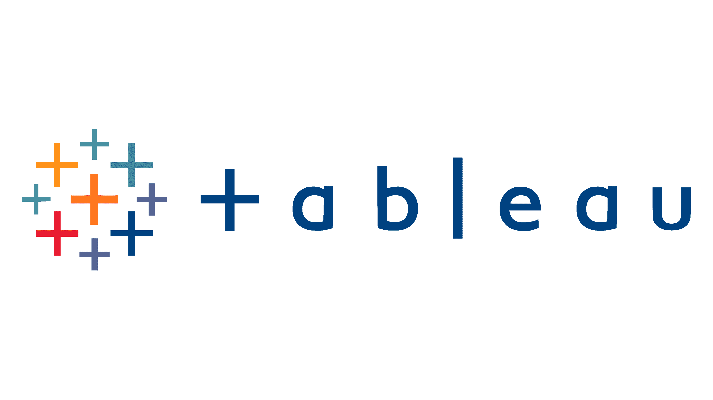

Does Budget Equal Success? Exploring Movie Industry Trends
Using a Kaggle movie dataset, I explored which factors most strongly influence a film's gross
revenue. After cleaning the data — handling missing values, fixing formats, and converting data
types — I performed a full correlation analysis using Python, Seaborn heatmaps, and regression
plots. I also converted non-numeric variables like genre and production company into numeric
codes to include them in the analysis. The key finding: budget and audience votes are the
strongest predictors of box office earnings, while production company had less impact than
expected.


This project explores a global COVID-19 dataset using SQL to uncover key trends and prepare data
for visualization in Tableau. The data was cleaned and structured in Excel and SQL Server, with
separate tables created for deaths and vaccinations.
SQL queries were used to calculate metrics such as death rates, infection rates, and global
statistics, while identifying high-impact regions. Advanced techniques including joins, window
functions, CTEs, and views were applied to perform deeper analysis and support future reporting.

This project focuses on cleaning the Nashville Housing dataset using SQL Server to improve data
quality and usability for analysis. Key steps included standardizing date formats, handling
missing values, and restructuring columns for better organization.
Advanced SQL techniques such as self-joins, string functions, CASE statements, and CTEs were
used to populate missing data, split address fields, standardize categories, and remove
duplicates. Unnecessary columns were dropped to produce a clean, analysis-ready dataset.

This project involved performing a complete data analysis workflow in Excel using a Bike Buyers
dataset, from data cleaning to building an interactive dashboard. The dataset was prepared by
removing duplicates, standardizing categorical values, and creating custom age groups using
nested IF statements.
Pivot Tables were used to analyze trends such as income, commute distance, and purchasing
behavior across customer groups. The final interactive dashboard included charts, slicers, and
connected filters to allow users to explore the data dynamically while maintaining a clean and
professional design.

This compilation highlights Tableau projects focused on data analysis and dashboard design.

I Developed an interactive Netflix dashboard in Power BI to analyze trends in streaming content
across different categories and regions. The project involved cleaning and transforming raw
data, then creating visualizations to explore content distribution, release trends, and
geographic insights.
The dashboard includes interactive charts, maps, KPI cards, and filters that allow users to
dynamically explore Netflix titles and viewing patterns. The final design focused on both
usability and visual storytelling to deliver a clear and engaging analytical experience.

I Developed an interactive Classic Models sales dashboard in Power BI to analyze business
performance, customer trends, and product sales. The project involved cleaning and transforming
data before creating visualizations to monitor revenue, orders, and sales activity across
different product categories and regions.
The dashboard includes KPI cards, charts, and interactive filters that allow users to explore
sales performance dynamically. The final design focused on presenting insights clearly while
maintaining a professional and user-friendly layout.